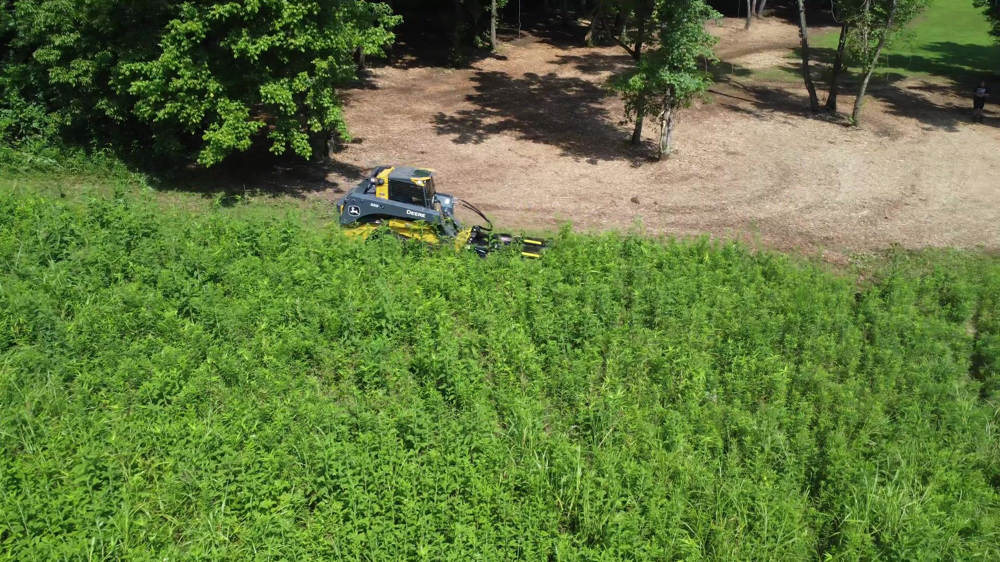
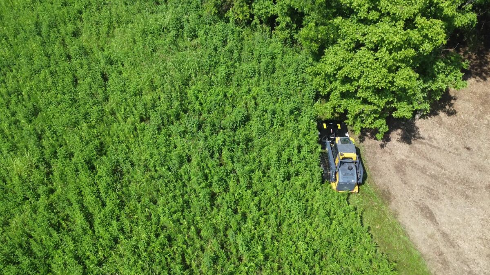
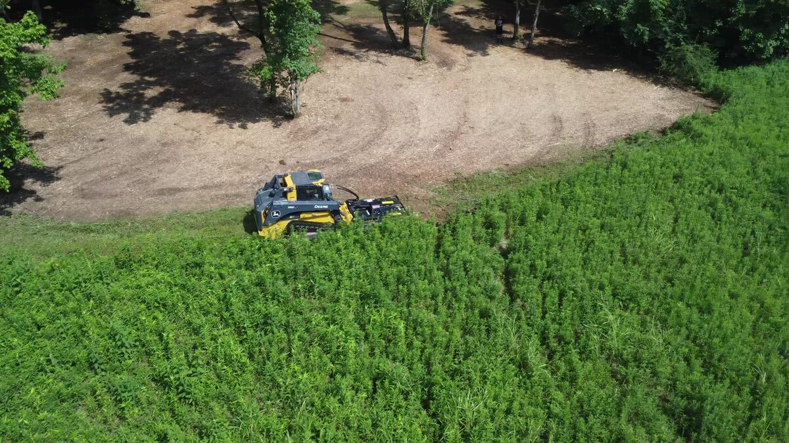
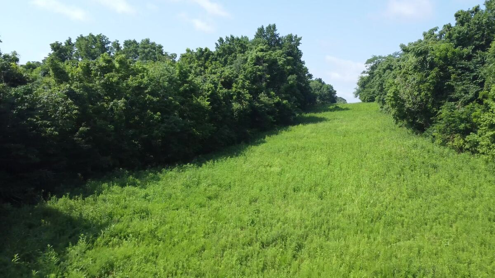
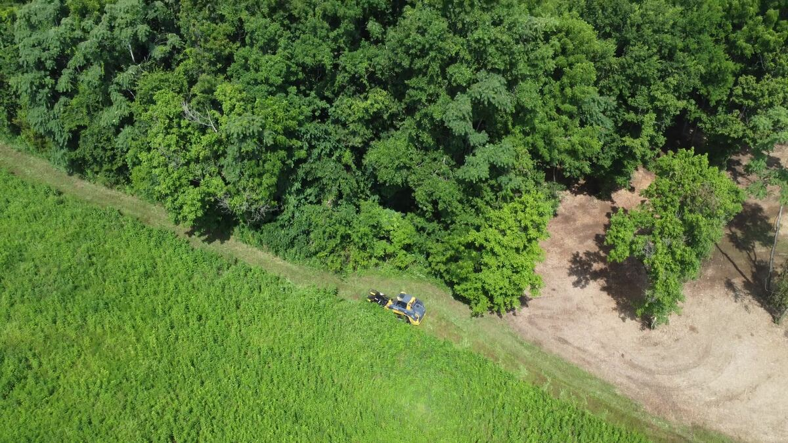
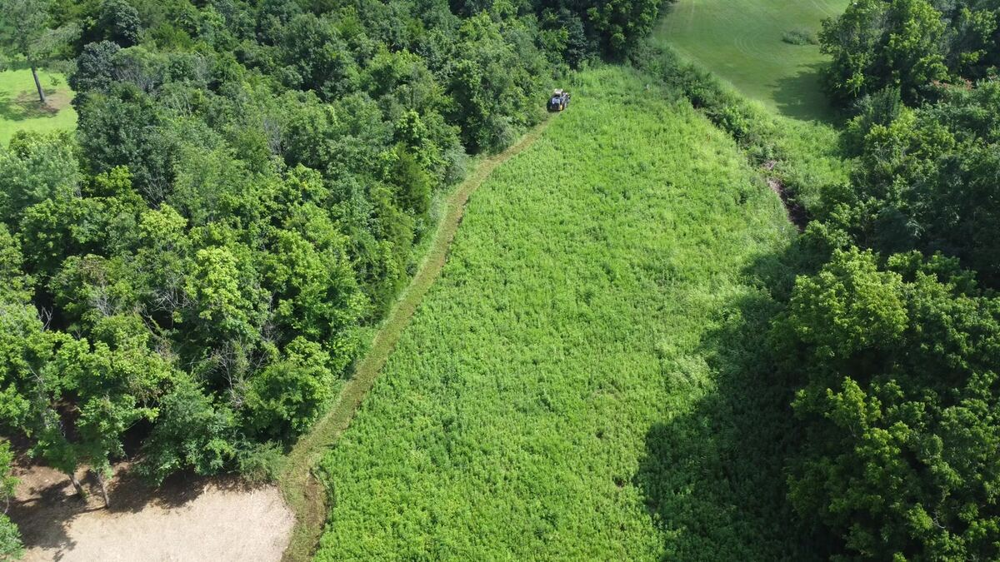
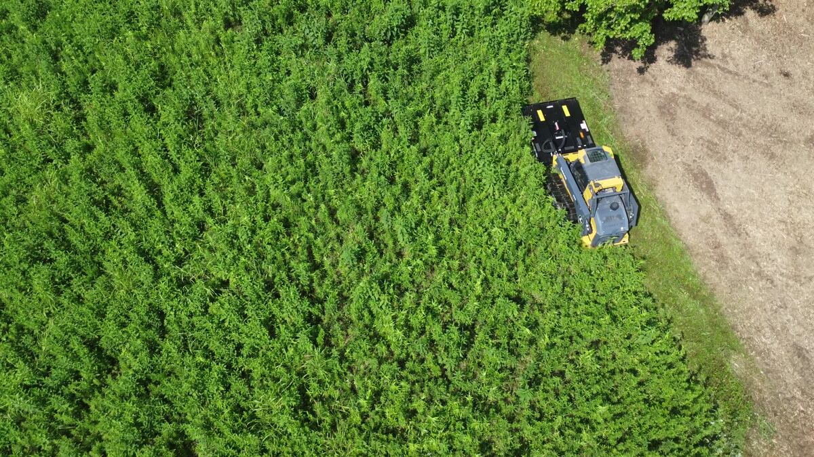

We turn overgrown, brushy, unusable acreage into clean, buildable, walkable ground — in a fraction of the time and mess of traditional clearing. Licensed, insured, and ready to run.
Forestry mulching grinds brush, saplings, and undergrowth into fine mulch right where it stands — no burn piles, no hauling, no scarred-up ground. Here's how we can help with your property.
Clear dense brush, vines, and small trees down to a clean mulch bed in a single pass — no burning, no debris piles, no exposed dirt.
Learn More →Open up pastures, home sites, trails, and fence lines. We clear exactly what you need cleared and leave the rest standing.
Learn More →Routine or one-time brush hogging for pastures, fields, and overgrown lots to keep your property maintained and accessible.
Learn More →Our mulching head grinds brush, vines, saplings, and small trees into fine mulch in a single pass, leaving the material right where it falls. No burn piles, no hauling, no dozer scars — just clean, walkable ground.
Whether you're prepping a home site, opening up a food plot, cutting a trail, or reclaiming pasture that's grown up in brush, we clear exactly what you need — and leave the rest alone.
For pastures and open ground that just need routine cutting rather than full mulching, we offer bush hogging to keep fields maintained, accessible, and looking sharp — one-time or on a recurring schedule.
Forestry mulching does the work of a bulldozer, a burn pile, and a brush hog crew — without the mess or the wait.
Tell us what you're working with. We'll walk the property or review it remotely and give you a straight answer.
No-pressure, no-obligation pricing based on acreage, terrain, and density — before we ever start the machine.
Our equipment grinds brush and small trees into mulch on the spot — one pass, minimal ground disturbance.
You're left with clean, walkable, usable ground and a layer of natural mulch instead of a mess to clean up.
Aerial shots straight from the job site — real brush, real acreage, real Middle Tennessee ground.







All Clear Mulching & Bush Hogging is a locally owned and operated outfit built around one simple idea: clearing overgrown land shouldn't take weeks of dozer work, burn piles, and cleanup. With the right equipment and an eye for the terrain, we can turn brushy, unusable ground into clean, walkable acreage — often in a single visit.
We show up, walk the property with you, explain what we'd recommend, and give you a straight price before anything starts. No surprises, no upsells — just the job done right.
Based out of Middle Tennessee, we take on forestry mulching, land clearing, and bush hogging jobs throughout the surrounding counties. Not sure if you're in range? Give us a call — if we can't get to you, we'll tell you.
Fill out the form and we'll follow up to schedule a free on-site estimate.
We're happy to talk through your property over the phone and get a free estimate scheduled.